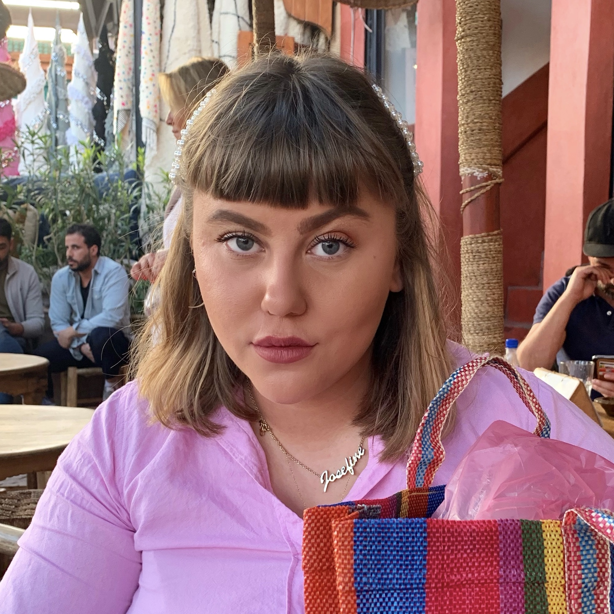
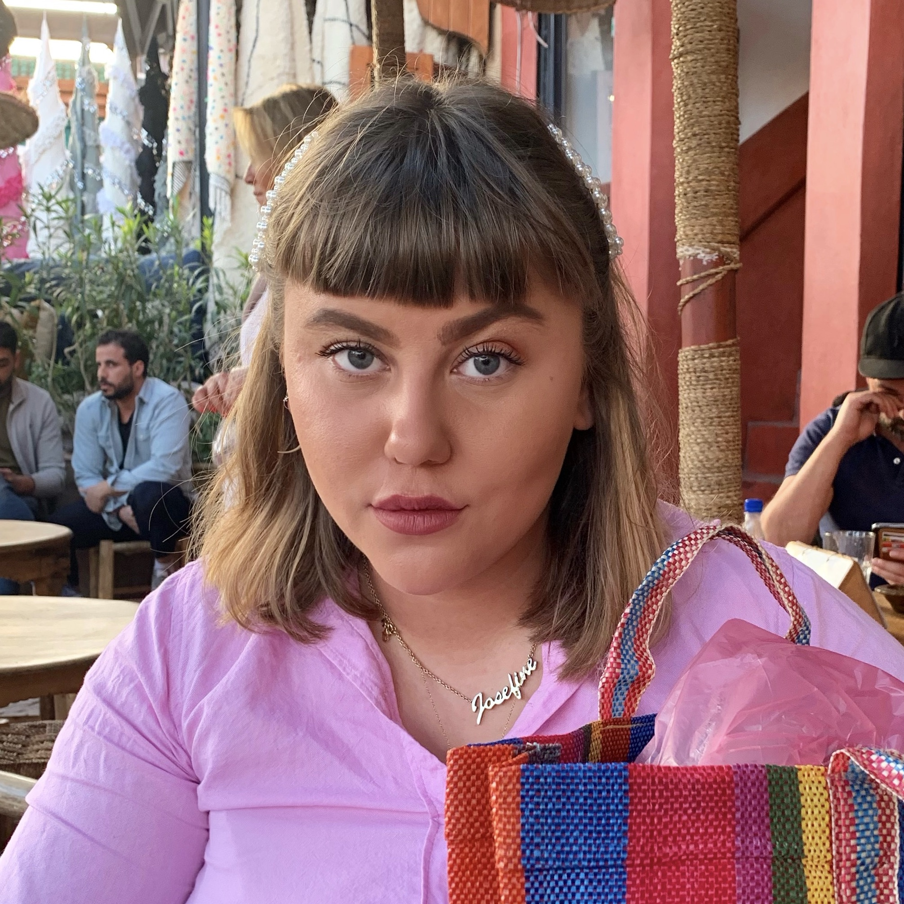

ABOUT
Mit navn er Josfine Honoré Ungermann. Jeg er 23 år gammel og fra København, Danmark. På nuværende tidspunkt studerer jeg Multimediedesign på KEA - Copenhagen School of Design and Technology. Youngmann Designs som ses på mit logo, er mit kreative univers, hvor jeg løbende vil vise mine studieprojekter, og andre kreative projekter og illustrationer.
Jeg har altid været meget inspireret af farver, kunst og styling. Jeg elsker at tegne og visualisere mine ideer. I min fritid driver jeg en bolig-styling Instagram, hvor jeg også udfolder mig kreaivt og udfolder min æstetik. Derudover er jeg under opstart med Youngmann Designs som skal være mit kreative brand, hvor jeg vil vise mine illustrationer og markedsføre mig som Multimediedesigner.
Ved siden af studiet, arbejder jeg privat som SoMe Assistent for den tidl. minister Manu Sareen. Her laver jeg alt fra grafisk arbejde, klipper film/vidoer, til sociale medier og content kaldender.
Josefine Honoré Ungermann
MY CV - LinkedInGET IN TOUCH
 
